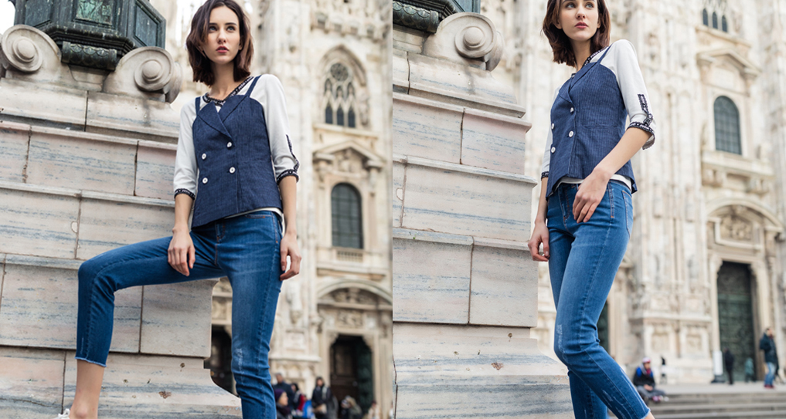
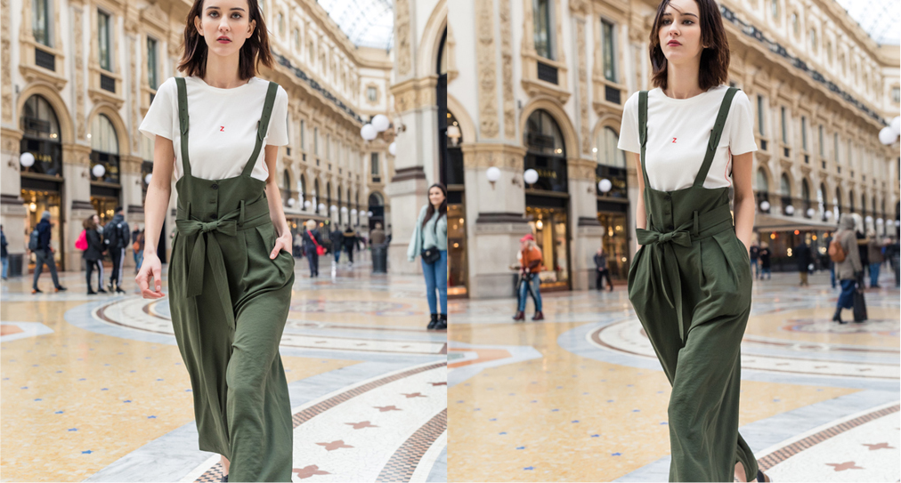

首页：
新闻动态>
时髦客不爱裙装爱裤装，她们美得不一样
新闻动态
时髦客不爱裙装爱裤装，她们美得不一样
紧身牛仔一直以来就是毫不费力就时髦的单品之一，尤其对上衣的选择极度宽容，几乎可以与任何风格完美契合，最好搭一件白T，清新自然，或者配一件OVERSIZE衬衫，慵懒闲适。
人人都对小黑裤的百搭青昧有加，殊不知，小白裤也是清爽显瘦利器，黑白斑马条纹投射光影魅力，如果搭配小黑裤，未免沉闷了，而小白裤则有提亮之效，上衣扎入裤中，腰线自然提升。
舒适是裤装除了简约以外的另一个特点，那么，阔腿裤则是把这一特点发挥到了极致，不受身形的束缚，自在不过如此，而当阔腿裤与背带裤结合时，又突破了年龄的困扰，走路都带风。
